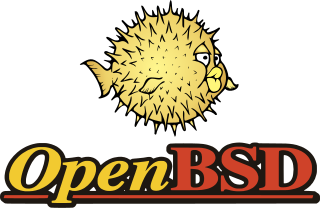

Before saying anything... Puffy takes the stage:
Have you tried out any of the BSD's? Ever thought about them in general?
If not: well, you might be missing out on something cool!
The BSD's in general prefer clean code and are quite flexible. They can be great desktops or make your server go brrrrrr...
Try them out and have some fun. The following are my two personal favorites. YMMV - since there are more then those listed here.
Sometimes I guess we need a break from using GNU/Linux... but don't tell that Tux, he will be mad!
...Before I forget: Stay Open! 💪